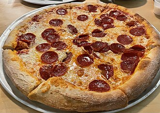

Making a pizza at home can be a very worthwhile experience.
With just a few ingredients and a litle bit of patience, you can
create a deliscious meal for yourself and your family.
Sprinkle your flour evenly throughout your work
area to prevent the dough from sticking to the table.
Roll your dough out into a 14-inch diameter circle.
Add a layer of your pizza sauce over the dough, leaving
room around the edges for the crust. You can either
chop your peperroni into smaller pieces or use them whole
and place them on the sauce. Finally, add your grated cheese
on top as well as the other optional seasonings if you would like.
Place the pizza in the oven for 15 minutes. You will know if
it's ready when the cheese is fully melted and bubbling and the
crust is golden brown.
Remove the pizza from the oven and let it sit for 5 minutes to cool down.
Slice and serve.